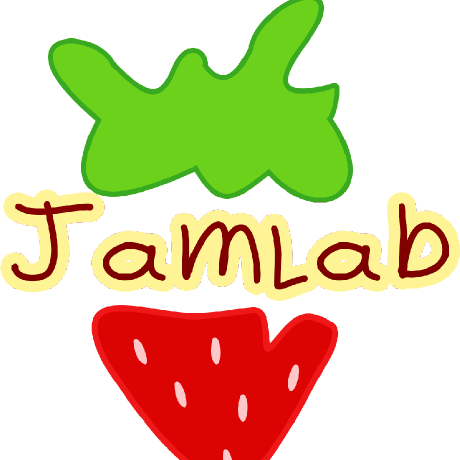
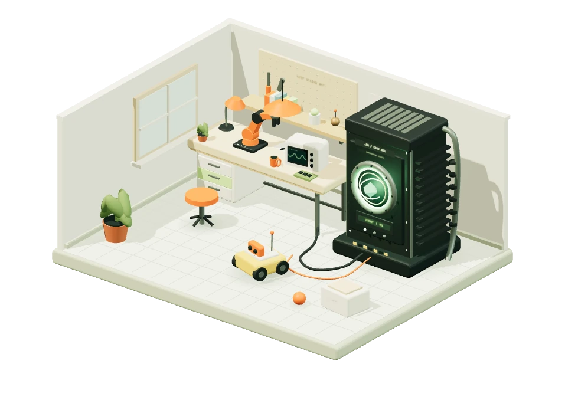

给下一个奇怪的点子，留张工作台。
也许是个小工具，也许是次大折腾。新的东西，正在路上。

GitHub欢迎来到 jamlab。
这里装着一些奇怪的点子、好玩的小东西，
和一颗认真探索底层的心。

看起来笨重，内里却装着对未来的想象。它是这间实验室的心脏。
从一个「要不试试」，
到一个真的能用的东西。
把复杂的东西，一点点弄明白。
学习路线、动手实验和可反复翻阅的笔记，
都放在这本不断生长的手册里。
从 Hacker News 的讨论中寻找线索。
翻书单、看片单，沿着月榜和精选主题，
发现值得继续探索的人、事与知识。

从一个小问题出发，猜一猜、动手试，
弄明白这个世界为什么会这样。
也许是个小工具，也许是次大折腾。新的东西，正在路上。
jamlab 是一间由好奇心驱动的独立实验室。
我们喜欢把东西拆开，看看它为什么会工作；也喜欢把不相干的想法放在一起，看看会发生什么。
好玩是起点。理解原理、亲手实现，再把探索留下来，是这里做事的方式。桌上可以有玩具，角落里也可以藏着未来。
实验还在继续。欢迎随时来看看。
在 GitHub 找到 jamlab